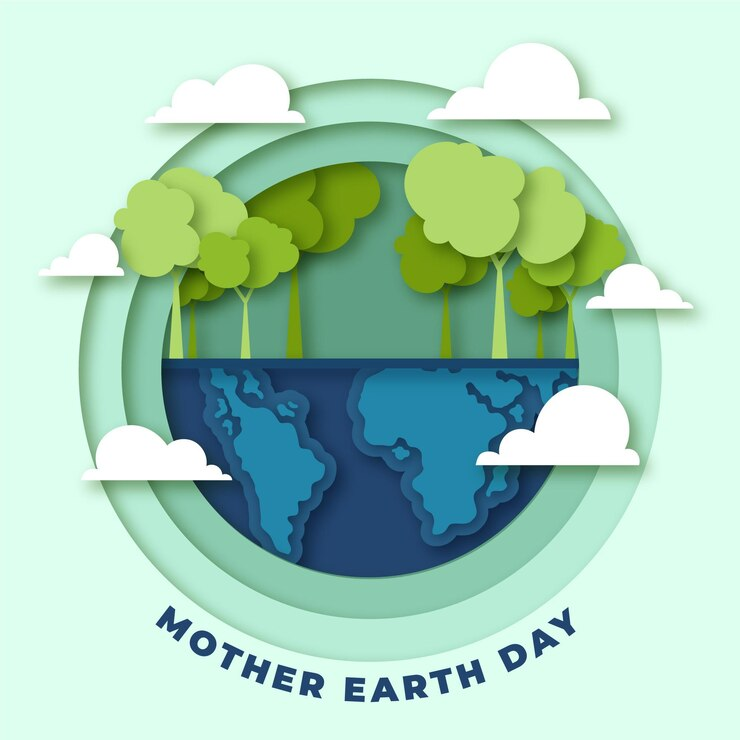

Datas e Movimentos Mundiais
- Dia da Terra: Celebrado em 22 de abril para promover a conscientização ambiental.
- Hora do Planeta: Realizada no último sábado de março, incentiva apagar as luzes por uma hora.
- Semana do Meio Ambiente: Comemorada em junho, promove atividades de educação ambiental.
- Movimento Fridays for Future: Iniciado por Greta Thunberg, mobiliza jovens pelo clima.
- Conferência das Nações Unidas sobre Mudança do Clima (COP): Evento anual para discutir ações climáticas.
Próxima Página: Órgãos Regulamentadores Brasileiros
Voltar para a Página Anterior
Voltar para a Página Inicial